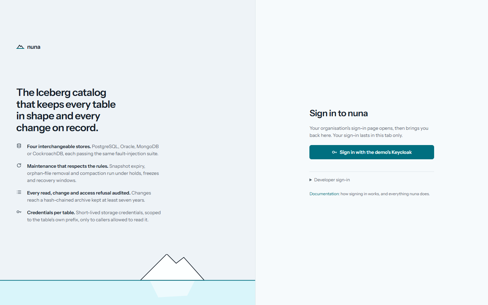

Signing in to the console
Sign in to the console through your identity provider, or by pasting a token where the server allows it for development, and sign out again. The console signs in like any other API caller: with a token the server checks on every request.
Before you begin
- You need the console's address: the server's URL followed by
/ui/, such ashttps://nuna.example/ui/. - An operator must have set up a way in. For an identity provider, that is
nuna.ui.oidc.issuerandnuna.ui.oidc.client-id, with the issuer trusted by the server. The token box appears only withnuna.ui.dev-token-login=true, which is off unless set. Server settings lists them. - You need an account at the identity provider, in groups that hold grants in nuna. Signing in works without any grant, but then the console shows no catalog.
What the sign-in page offers
The page is titled Sign in to nuna. Before it draws, the console reads its settings from GET /ui/config.json, which needs no sign-in and holds nothing secret. What it offers depends on those settings:
- With an identity provider: "Your organisation's sign-in page opens, then brings you back here. Your sign-in lasts in this tab only." and the button Sign in with provider, where provider is the identity provider's name in words when
nuna.ui.oidc.namesets one, such as Sign in with the demo's Keycloak, and its host otherwise. - With developer tokens: a box labelled Bearer token, the words "Paste a bearer token. For development only: this server allows signing in with one." and the button Use this token. When an identity provider is also set, all three sit folded, closed, under Developer sign-in; with none, they are the only way in and stay open.
- With neither: "No sign-in is set up on this server. Ask whoever runs nuna to connect your organisation's sign-in."

Sign in through your identity provider
Open the console's address.
Select Sign in with provider.
The console shows Going to provider… and sends you to the identity provider's sign-in page. It signs in as a public client with the authorization code flow and PKCE, so it holds no client secret.
Sign in at the identity provider.
It sends you back to the console, by default to its own
/ui/address (nuna.ui.oidc.redirect-urican name another).
The console keeps the token in this browser tab's session storage only: not in local storage and not in a cookie. Another tab, or this tab after it closes, signs in again. The console reads your name and groups from the token for display only; the server checks the token's signature on every request.
Sign in with a token
Where the server allows it, you can paste a token instead.
Get a token for your user.
Get a token says how.
If the page also offers an identity provider, select Developer sign-in.
The token box opens.
Paste it into Bearer token.
A leading
Beareris removed. The token is "Kept in this tab only."Select Use this token.
Sign out
Select Sign out in the header.
The console shows Signing out…, forgets the token, and asks the identity provider to end your session there too, through its end-session endpoint. You return to the sign-in page with Signed out.
If the identity provider cannot end its session, the console says so: "Signed out of nuna, but provider did not end your session there (reason). Signing in again may not ask for a password." If it offers no way to: "Signed out of nuna, but provider offers no way to end your session there, so signing in again may not ask for a password."
If it fails
| Message | Why | What to do |
|---|---|---|
| The console could not start: it could not load its settings. | GET /ui/config.json did not answer within 15 s. | Select Try again; if it persists, check the server is reachable. |
| No sign-in is set up on this server. | Neither nuna.ui.oidc nor the token box is set. | An operator sets nuna.ui.oidc.issuer and nuna.ui.oidc.client-id. |
| host is not answering: no reply in 15 s. | The identity provider's discovery document did not come back. | Check the identity provider is up and reachable from your browser, then Start again. |
| host could not be reached: reason. | The browser could not connect to the identity provider. | Check the issuer URL and your network. |
| Your organisation's sign-in service did not answer as expected (status). | The discovery document answered with an error. | Check nuna.ui.oidc.issuer. |
| Your organisation's sign-in refused: description. | The identity provider sent back an error, such as an unknown client or redirect address. | Check the client id and that the client allows the console's address as a redirect and post-logout redirect. |
| This sign-in was not started in this tab, or has expired. Start again. | The answer came back to a tab that did not start the sign-in. | Sign in again from this tab. |
| Signing in did not finish: your organisation's sign-in answered status error | Exchanging the code for a token failed. | Read the error; check the client is public and allows PKCE. |
| That is not a JWT (three base64url parts). | What was pasted is not a token. | Paste the whole token. |
| Your sign-in has expired or was not accepted. Sign in again. | The server answered 401 to a request: the token expired, or its issuer or audience is not one the server accepts. | Sign in again. If it recurs at once, the issuer must be in the server's trusted issuers (Connect an identity provider). |
See also
- The console: what you see once signed in.
- Connect an identity provider: issuers, audiences and the groups claim.
- Authentication: how the server checks a token.
- Demo users and sign-in: the demo's users.
How this page was checked
Written from the console's auth.js, app.js and index.html, and from UiRoutes.java and UiSettings.java, checked against commit b3e8582f on 2026-11-26.
No sign-in was run for this page; the console was not driven in a browser.